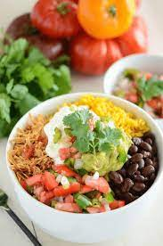

Salsa Chicken Burrito Bowl
Description
Excellent Tex-Mex recipe with a ton of great flavor.
Ingredients
- 1lb Boneless Skinless Chicken Breast
- 1 Cup Salsa, divided
- 1 White Onion, sliced
- 1 Bell Pepper, sliced
- 1 Can Pinto Beans, drained and rinsed
- 1 Can Black Beans, drained and rinsed
- 1 Can Mexicorn, drained and rinsed
- 2 Cups Rice
- 2 ½ Cups Water
- 1 tbsp Olive Oil
- Salt, pepper, and other seasonings
- ½ Cup Cilantro, finely chopped
- Sour Cream for serving
Steps
- Place ½ cup of salsa in bottom of Instant Pot. Place chicken in the pot on top of the salsa and pour remaining salsa over the top. Secure the lid and pressure cook for 10 minutes. Let this naturally release for 10 more minutes until doing an instant release.
- Place rice and water into a second Instant Pot and pressure cook for 3 minutes. Let naturally release for 10 minutes before doing an instant release.
- Heat oil in a skillet over medium heat. Add onion and bell pepper and cook until tender — about 5 minutes.
- Add beans and corn to skillet. Season with salt and pepper to taste, plus other seasonings you may like. I love to include chili powder and ground cumin.
- Add chopped cilantro leaves to done rice and fluff with a fork.
- Use two forks to shred done salsa chicken and return to the pot with the salsa juices.
- Combine into a bowl and serve with Sour Cream!